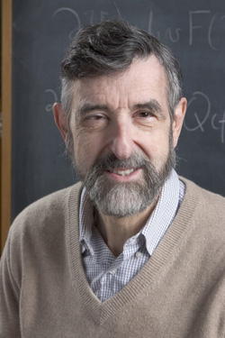
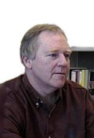
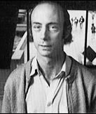

The Conference
This conference aims to bring together the top specialists in the field of collisionless kinetic theory, along with promising young mathematicians, to explore recent progress, identify important open problems, and hopefully set a course for the next few years.
The field of collisionless kinetic theory has seen a revived interest in recent years. This conference aims to harness this renewed interest to generate momentum and attract young researchers to this field.
Some of the most influential results of the last decades are due to Walter Strauss, Bob Glassey and Jack Schaeffer: three mathematical generations. We will use this opportunity to mark their contributions to this field. In particular, we shall mark Bob's 70th birthday, as well as the 20th anniversary of the publication of his book "The Cauchy Problem in Kinetic Theory".
Goals
Some of the goals of the conference are to further the understanding of:
- Linear and nonlinear stability of BGK waves and other equilibria of the Vlasov-Poisson system, both within the case of an electrostatic plasma and gravitational interactions
- Stability of collisionless plasmas modeled by stationary solutions of the Vlasov-Maxwell system
- Further advances in the mathematical understanding of Landau damping
- Basic existence and uniqueness questions for the relativistic and nonrelativistic Vlasov-Maxwell, Vlasov-Fokker-Planck, and Vlasov-Einstein systems
- Computational approximation of solutions to collisionless kinetic equations, typically by utilizing Particle-In-Cell (PIC) or Discontinuous-Galerkin (DG) methods
- Linear and nonlinear stability of the vacuum solution to the Vlasov-Einstein system
Walter Strauss 
Walter received his Ph.D. from MIT in 1962 under the direction of Irving Segal. Ever since, he has been one of the foremost mathematicians working in the field of nonlinear wave equations. His work in Kinetic Theory was mostly initiated in a sequence of joint papers with Bob Glassey in the 1980s.
Bob Glassey
Bob received his Ph.D. from Brown University in 1972 under the direction of Walter Strauss. His work has been fundamental within the field of Kinetic Theory as Bob's collaborative efforts with both Jack (his student) and Walter (his advisor) have solved many of the fundamental mathematical issues concerning the Boltzmann equation, as well as the Vlasov-Poisson and Vlasov-Maxwell systems. His book "The Cauchy Problem in Kinetic Theory" (SIAM, 1996) to this day is one of the central references in the field.
Jack Schaeffer
Jack received his Ph.D. from Indiana University in 1983 under the direction of Bob Glassey. Together, he and Bob are responsible for a large number of results which have settled open existence and uniqueness questions, including those concerning the relativistic Vlasov-Maxwell system in all dimensions but three. Perhaps most notable amongst Jack's work is the paper "Global Existence of Smooth Solutions to the Vlasov-Poisson System in Three Dimensions" (in Comm. PDE, 1991), in which major aspects of Pfaffelmoser's proof regarding global existence of smooth solutions to the Vlasov-Poisson system were elucidated within the Kinetic Theory community for the first time.
Registration
Registration is required of all participants and carries a flat fee of £50. Conference dinner and coffee breaks are included. To register click here.
There is limited funding for junior participants. Please contact us to enquire.
We acknowledge the financial support of the Department of Mathematics at Imperial College London through the EPSRC Platform Grant, the Department of Mathematics at King's College London, the London Mathematical Society and the KI-Net NSF Research Network:

{kind=link}
{kind=link}